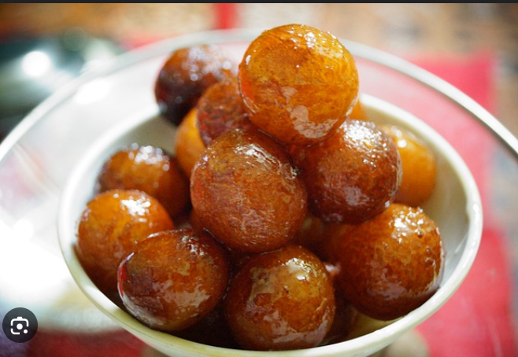
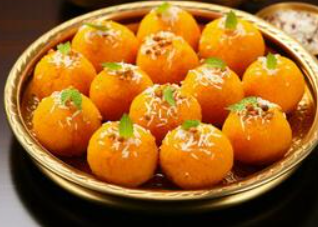
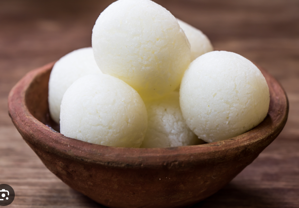
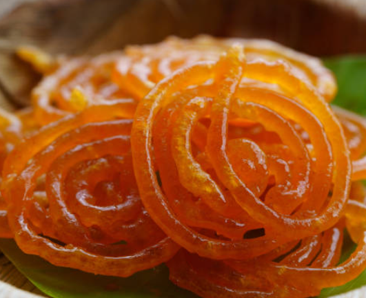
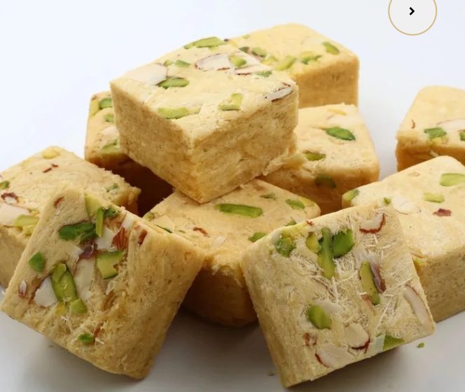

Gulam Jamun
Ingredients
- Sugar
- Mawa
- Oil
- Maida
Recipe
- Mix 1 cup khoya, 2 tbsp flour, and a pinch of baking soda to form a smooth dough, then shape into small balls.
- Fry the balls on low heat until golden brown.
- Prepare a sugar syrup by boiling 1 cup sugar with 1 1/2 cups water and cardamom.
- Soak the fried gulab jamuns in the warm syrup for at least 1 hour before serving.

KajuKatli
Ingredients
- Sugar
- kaju
- Oil
Recipe
- Grind 1 cup of cashews into a fine powder.
- In a pan, heat 1/2 cup sugar and 1/4 cup water to form a syrup (1 string consistency).
- Add the cashew powder to the syrup, stirring continuously to form a dough.
- Knead the dough once cooled slightly, then roll it out and cut into diamond shapes.
- Garnish with silver vark and let it set before serving.

Laddoo
Ingredients
- Sugar
- Besan
- Oil
Recipe
- Roast 2 cups of besan (gram flour) in ghee until golden brown and aromatic.
- Add 1 cup powdered sugar, 1/4 tsp cardamom powder, and mix well.
- Let it cool slightly, then shape into small laddoos.
- Garnish with chopped nuts and enjoy!

Rasgulla
Ingredients
- Sugar
- Milk
- Lemaon juice
- Oil
Recipe
- Boil 1 liter milk, curdle it with lemon juice to make chhena (paneer), and strain the whey.
- Knead the chhena into a smooth dough, shape into small balls.
- In a pot, boil 1 cup sugar with 4 cups water to make syrup, then add the chhena balls.
- Cook for 15-20 minutes, until rasgullas double in size, and serve chilled.

Jallebi
Ingredients
- Sugar
- Maida
- Oil
Recipe
- Make a batter by mixing 1 cup all-purpose flour, 2 tbsp cornflour, 1/4 tsp turmeric, and water; let it ferment for 6-8 hours.
- Heat sugar with water to make a sticky syrup (1 string consistency) and add saffron or cardamom.
- Pipe the batter into hot oil in spiral shapes, fry until golden and crisp.
- Dip the fried jalebis in warm sugar syrup for a few seconds, then serve hot.

Sonpapdi
Ingredients
- Sugar
- Maida
- Ghee
- Besan
Recipe
- Heat 1 cup sugar with 1/4 cup water to make a syrup (until it reaches hard-ball stage).
- Roast 1/2 cup gram flour and 1/2 cup all-purpose flour in ghee, then mix with the syrup.
- Roast 1/2 cup gram flour and 1/2 cup all-purpose flour in ghee, then mix with the syrup.
- Roast 1/2 cup gram flour and 1/2 cup all-purpose flour in ghee, then mix with the syrup.
